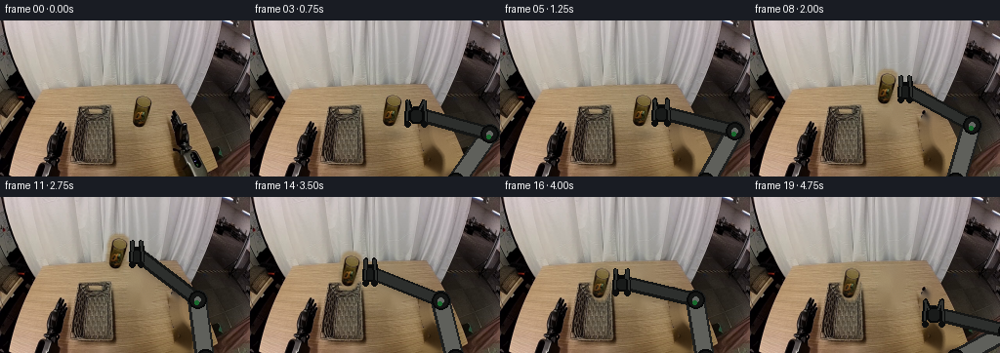
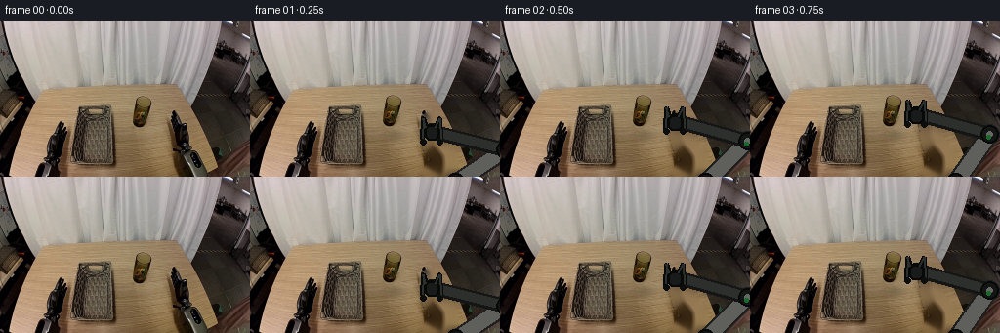
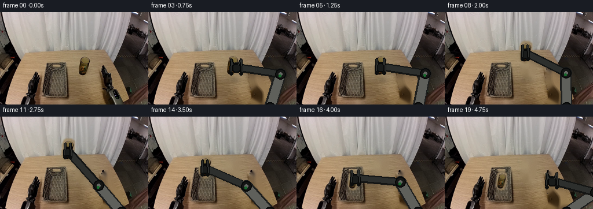
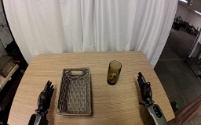
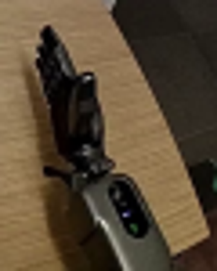
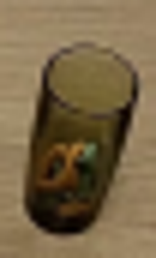
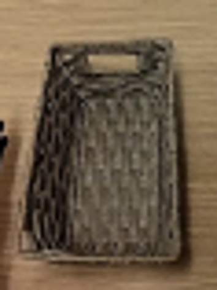
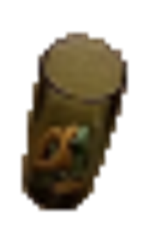
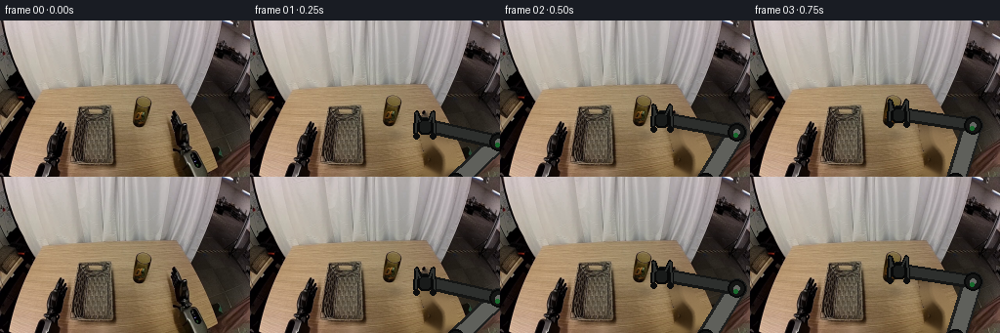

CODING AGENTS AS PIXEL WORLD MODELS
traex/GPT-5.6-Sol · common50_0033
点击播放 · 原生 RGB 像素
逐轮保存的候选
回放视频、检查图与代码变化。
每份候选均可单独播放。实际图片检查记录在下方工具轨迹中。
候选 01播放与检查图
点击播放 · 原生 RGB 像素


展开代码变化
--- 上一保存版本
+++ 本次保存版本
@@ -0,0 +1,173 @@
+from pathlib import Path
+import math
+import numpy as np
+import cv2
+from PIL import Image, ImageDraw, ImageFilter
+import artifact_io
+
+CASE_DIR = Path(__file__).resolve().parent
+W, H, N = 256, 160, 20
+
+def smooth(t):
+ t = max(0.0, min(1.0, t))
+ return t*t*(3.0-2.0*t)
+
+def interp(a,b,t):
+ u=smooth(t)
+ return tuple(a[i]*(1-u)+b[i]*u for i in range(len(a)))
+
+def bezier(p0,p1,p2,t):
+ u=1-t
+ return tuple(u*u*p0[i]+2*u*t*p1[i]+t*t*p2[i] for i in range(2))
+
+def polygon_mask(poly, blur=1.0):
+ m=Image.new('L',(W,H),0); d=ImageDraw.Draw(m)
+ d.polygon([(int(x),int(y)) for x,y in poly],fill=255)
+ if blur: m=m.filter(ImageFilter.GaussianBlur(blur))
+ return np.array(m)
+
+def masked_background(base, masks):
+ """Remove foreground objects by texture-aware inpainting, leaving fixed table."""
+ union=np.zeros((H,W),np.uint8)
+ for m in masks: union=np.maximum(union,m)
+ union=cv2.dilate((union>25).astype(np.uint8)*255,np.ones((3,3),np.uint8),iterations=1)
+ # Telea removes object silhouette; low-amplitude grain reinstates the wood texture.
+ out=cv2.inpaint(cv2.cvtColor(base,cv2.COLOR_RGB2BGR),union,5,cv2.INPAINT_TELEA)
+ out=cv2.cvtColor(out,cv2.COLOR_BGR2RGB)
+ rng=np.random.default_rng(33)
+ noise=rng.normal(0,0.75,out.shape[:2])[:,:,None]
+ out=np.clip(out.astype(np.float32)+noise*(union[:,:,None]/255),0,255).astype(np.uint8)
+ return out
+
+def rounded_poly(draw, points, fill, width=1):
+ draw.line(points,fill=fill,width=width,joint='curve')
+
+BASE=np.array(Image.open(CASE_DIR/'first_frame.png').convert('RGB'))
+# Masks are deliberately conservative and cover only the moving right manipulator/object.
+GLASS_POLY=[(137,75),(143,72),(151,73),(156,77),(156,88),(154,103),(150,111),(143,113),(136,108),(133,101),(134,84)]
+ARM_POLY=[(181,96),(186,94),(191,101),(194,119),(198,126),(206,132),(213,158),(180,159),(181,150),(188,145),(187,137),(180,132),(177,119),(176,105)]
+glass_m=polygon_mask(GLASS_POLY,1.2)
+arm_m=polygon_mask(ARM_POLY,1.3)
+CLEAN=masked_background(BASE,[glass_m,arm_m])
+
+# Keep a high-fidelity source sprite for the olive-green glass.
+x0,y0,x1,y1=130,69,160,116
+crop=BASE[y0:y1,x0:x1]
+a=glass_m[y0:y1,x0:x1]
+GLASS=np.dstack([crop,a])
+
+def paste_rgba(dst, src, xy):
+ layer=Image.new('RGBA',(W,H),(0,0,0,0))
+ layer.alpha_composite(Image.fromarray(src,'RGBA'),(int(round(xy[0])),int(round(xy[1]))))
+ dst.alpha_composite(layer)
+
+def draw_glass_shadow(img,cx,cy,scale=1.0,alpha=55):
+ sh=Image.new('RGBA',(W,H),(0,0,0,0)); d=ImageDraw.Draw(sh)
+ rx,ry=10*scale,4*scale
+ d.ellipse((cx-rx+3,cy-ry+5,cx+rx+3,cy+ry+5),fill=(25,21,14,alpha))
+ sh=sh.filter(ImageFilter.GaussianBlur(3.0))
+ img.alpha_composite(sh)
+
+def add_glass(img,cx,cy,scale=1.0,visible=1.0):
+ # cx/cy are the center and vertical bottom of the source glass.
+ if visible<=0: return
+ spr=Image.fromarray(GLASS,'RGBA')
+ nw=max(1,int(round(spr.width*scale))); nh=max(1,int(round(spr.height*scale)))
+ spr=spr.resize((nw,nh),Image.Resampling.LANCZOS)
+ if visible<1:
+ aa=np.array(spr); aa[:,:,3]=(aa[:,:,3].astype(float)*visible).astype(np.uint8); spr=Image.fromarray(aa)
+ paste_rgba(img,np.array(spr),(cx-nw/2,cy-nh+3*scale))
+
+def elbow_for(wrist):
+ # IK for a constant-length two-link arm anchored just beneath frame.
+ A=np.array([210.0,166.0]); P=np.array(wrist,float); L1,L2=61.0,78.0
+ v=P-A; dist=float(np.linalg.norm(v)); d=min(max(dist,abs(L2-L1)+.01),L1+L2-.01); u=v/dist
+ a=(L1*L1-L2*L2+d*d)/(2*d); h=math.sqrt(max(0,L1*L1-a*a))
+ mid=A+a*u; perp=np.array([-u[1],u[0]])
+ c1=mid+h*perp; c2=mid-h*perp
+ # Right-side elbow looks physical and stays on the same branch for stability.
+ candidates=[c1,c2]
+ valid=[c for c in candidates if c[0] >= P[0]+12]
+ return tuple(max(valid,key=lambda c:c[0])) if valid else tuple(max(candidates,key=lambda c:c[0]))
+
+def capsule_layer(p0,p1,width,outer,inner=None):
+ lay=Image.new('RGBA',(W,H),(0,0,0,0)); d=ImageDraw.Draw(lay)
+ p0=tuple(map(float,p0));p1=tuple(map(float,p1));
+ d.line([p0,p1],fill=outer,width=width,joint='curve')
+ r=width/2
+ for p in (p0,p1): d.ellipse((p[0]-r,p[1]-r,p[0]+r,p[1]+r),fill=outer)
+ if inner:
+ iw=max(1,width-5); d.line([p0,p1],fill=inner,width=iw,joint='curve'); rr=iw/2
+ for p in (p0,p1): d.ellipse((p[0]-rr,p[1]-rr,p[0]+rr,p[1]+rr),fill=inner)
+ return lay
+
+def draw_arm(img,wrist,grip,glass_center=None):
+ """Render one rigid 2-link right arm; grip=0 open, grip=1 securely closed."""
+ A=(210.0,166.0); E=elbow_for(wrist); wx,wy=wrist
+ # Contact shadow is subtle but helps connect arm with tabletop.
+ sh=Image.new('RGBA',(W,H),(0,0,0,0)); sd=ImageDraw.Draw(sh)
+ sd.line([(A[0]+3,A[1]+3),(E[0]+3,E[1]+4),(wx+3,wy+4)],fill=(25,20,15,48),width=16,joint='curve')
+ sh=sh.filter(ImageFilter.GaussianBlur(3)); img.alpha_composite(sh)
+ # Upper housing and forearm are mechanically rigid, constant-width capsules.
+ img.alpha_composite(capsule_layer(A,E,20,(30,31,30,255),(95,96,91,255)))
+ img.alpha_composite(capsule_layer(E,wrist,15,(20,21,20,255),(45,47,45,255)))
+ d=ImageDraw.Draw(img)
+ for p,r in [(A,10),(E,9),(wrist,7)]:
+ d.ellipse((p[0]-r,p[1]-r,p[0]+r,p[1]+r),fill=(20,21,20,255),outline=(7,8,8,255),width=2)
+ d.ellipse((p[0]-3,p[1]-3,p[0]+3,p[1]+3),fill=(101,103,99,255))
+ # Cylindrical wrist head.
+ d.rounded_rectangle((wx-7,wy-6,wx+7,wy+9),radius=5,fill=(25,27,26,255),outline=(7,8,8,255),width=2)
+ # Fingers flank object vertically: open approach, close, carry, release.
+ gap=8.5-4.2*grip
+ top=wy-13; bottom=wy+10
+ for side in (-1,1):
+ x=wx+side*gap
+ # finger linkage and inward fingertip
+ pts=[(wx+side*5,wy-4),(x,top),(x+side*1,bottom-2),(x-side*2,bottom+1)]
+ d.line(pts,fill=(8,9,9,255),width=5,joint='curve')
+ d.line(pts,fill=(45,47,45,255),width=2,joint='curve')
+ d.ellipse((x-3,bottom-2,x+3,bottom+4),fill=(12,13,13,255))
+ # small green status lamp retained from source visual language
+ d.ellipse((E[0]-3,E[1]+1,E[0]+1,E[1]+5),fill=(25,105,45,255))
+
+def trajectory(i):
+ # Deliberate stages: approach, close, lift, carry, lower/release, retract.
+ if i<=4:
+ t=i/4; wrist=bezier((188,119),(181,99),(165,94),smooth(t)); grip=0.0; gc=(145.0,112.0); held=False
+ elif i<=6:
+ t=(i-4)/2; wrist=(165.0,94.0); grip=smooth(t); gc=(145.0,112.0); held=i>=6
+ elif i<=9:
+ t=(i-6)/3; c=bezier((145,112),(141,91),(137,84),smooth(t)); wrist=(c[0]+20,c[1]-18); grip=1; gc=c; held=True
+ elif i<=13:
+ t=(i-9)/4; c=bezier((137,84),(120,70),(103,83),smooth(t)); wrist=(c[0]+20,c[1]-18); grip=1; gc=c; held=True
+ elif i<=15:
+ t=(i-13)/2; c=interp((103,83),(103,107),t); wrist=(c[0]+20,c[1]-18); grip=1; gc=c; held=True
+ elif i<=17:
+ t=(i-15)/2; wrist=interp((123,89),(126,86),t); grip=1-smooth(t); gc=(103,107); held=False
+ else:
+ t=(i-17)/2; wrist=bezier((126,86),(164,91),(188,119),smooth(t)); grip=0; gc=(103,107); held=False
+ return wrist,grip,gc,held
+
+def make_frame(i):
+ if i==0: return BASE.copy()
+ wrist,grip,gc,held=trajectory(i)
+ img=Image.fromarray(CLEAN,'RGB').convert('RGBA')
+ # Basket remains completely unchanged. Draw the glass below gripper when carried;
+ # after release it stays visibly upright inside the basket.
+ if not held:
+ draw_glass_shadow(img,gc[0],gc[1],0.93,35 if i>=16 else 52)
+ add_glass(img,gc[0],gc[1],0.95 if i>=16 else 1.0,0.92 if i>=16 else 1.0)
+ draw_arm(img,wrist,grip)
+ else:
+ # Moving shadow advances across the tabletop beneath the lifted glass.
+ lift=max(0,112-gc[1]); shadow_alpha=int(max(18,52-lift*0.8))
+ draw_glass_shadow(img,gc[0],112 if gc[0]>126 else min(116,gc[1]+22),0.95,shadow_alpha)
+ add_glass(img,gc[0],gc[1],0.98)
+ draw_arm(img,wrist,grip,gc)
+ return np.array(img.convert('RGB'),dtype=np.uint8)
+
+frames=np.stack([make_frame(i) for i in range(N)],axis=0)
+# Contract invariant.
+assert np.array_equal(frames[0],BASE)
+assert frames.shape==(20,160,256,3) and frames.dtype==np.uint8
+artifact_io.save(frames,CASE_DIR)
候选 02播放与检查图
点击播放 · 原生 RGB 像素

展开代码变化
--- 上一保存版本
+++ 本次保存版本
@@ -133,19 +133,19 @@
def trajectory(i):
# Deliberate stages: approach, close, lift, carry, lower/release, retract.
if i<=4:
- t=i/4; wrist=bezier((188,119),(181,99),(165,94),smooth(t)); grip=0.0; gc=(145.0,112.0); held=False
+ t=i/4; wrist=bezier((185,111),(166,98),(145,94),smooth(t)); grip=0.0; gc=(145.0,112.0); held=False
elif i<=6:
- t=(i-4)/2; wrist=(165.0,94.0); grip=smooth(t); gc=(145.0,112.0); held=i>=6
+ t=(i-4)/2; wrist=(145.0,94.0); grip=smooth(t); gc=(145.0,112.0); held=i>=6
elif i<=9:
- t=(i-6)/3; c=bezier((145,112),(141,91),(137,84),smooth(t)); wrist=(c[0]+20,c[1]-18); grip=1; gc=c; held=True
+ t=(i-6)/3; c=bezier((145,112),(141,91),(137,84),smooth(t)); wrist=(c[0],c[1]-18); grip=1; gc=c; held=True
elif i<=13:
- t=(i-9)/4; c=bezier((137,84),(120,70),(103,83),smooth(t)); wrist=(c[0]+20,c[1]-18); grip=1; gc=c; held=True
+ t=(i-9)/4; c=bezier((137,84),(117,70),(98,86),smooth(t)); wrist=(c[0],c[1]-18); grip=1; gc=c; held=True
elif i<=15:
- t=(i-13)/2; c=interp((103,83),(103,107),t); wrist=(c[0]+20,c[1]-18); grip=1; gc=c; held=True
+ t=(i-13)/2; c=interp((98,86),(98,128),t); wrist=(c[0],c[1]-18); grip=1; gc=c; held=True
elif i<=17:
- t=(i-15)/2; wrist=interp((123,89),(126,86),t); grip=1-smooth(t); gc=(103,107); held=False
+ t=(i-15)/2; wrist=interp((98,110),(105,103),t); grip=1-smooth(t); gc=(98,128); held=False
else:
- t=(i-17)/2; wrist=bezier((126,86),(164,91),(188,119),smooth(t)); grip=0; gc=(103,107); held=False
+ t=(i-17)/2; wrist=bezier((105,103),(156,91),(185,111),smooth(t)); grip=0; gc=(98,128); held=False
return wrist,grip,gc,held
def make_frame(i):
@@ -155,8 +155,8 @@
# Basket remains completely unchanged. Draw the glass below gripper when carried;
# after release it stays visibly upright inside the basket.
if not held:
- draw_glass_shadow(img,gc[0],gc[1],0.93,35 if i>=16 else 52)
- add_glass(img,gc[0],gc[1],0.95 if i>=16 else 1.0,0.92 if i>=16 else 1.0)
+ draw_glass_shadow(img,gc[0],gc[1],0.80,35 if i>=16 else 52)
+ add_glass(img,gc[0],gc[1],0.80 if i>=16 else 1.0,0.92 if i>=16 else 1.0)
draw_arm(img,wrist,grip)
else:
# Moving shadow advances across the tabletop beneath the lifted glass.
候选 03播放与检查图
点击播放 · 原生 RGB 像素

展开代码变化
--- 上一保存版本
+++ 本次保存版本
@@ -141,11 +141,11 @@
elif i<=13:
t=(i-9)/4; c=bezier((137,84),(117,70),(98,86),smooth(t)); wrist=(c[0],c[1]-18); grip=1; gc=c; held=True
elif i<=15:
- t=(i-13)/2; c=interp((98,86),(98,128),t); wrist=(c[0],c[1]-18); grip=1; gc=c; held=True
+ t=(i-13)/2; c=interp((98,86),(98,133),t); wrist=(c[0],c[1]-18); grip=1; gc=c; held=True
elif i<=17:
- t=(i-15)/2; wrist=interp((98,110),(105,103),t); grip=1-smooth(t); gc=(98,128); held=False
+ t=(i-15)/2; wrist=interp((98,110),(105,103),t); grip=1-smooth(t); gc=(98,133); held=False
else:
- t=(i-17)/2; wrist=bezier((105,103),(156,91),(185,111),smooth(t)); grip=0; gc=(98,128); held=False
+ t=(i-17)/2; wrist=bezier((105,103),(156,91),(185,111),smooth(t)); grip=0; gc=(98,133); held=False
return wrist,grip,gc,held
def make_frame(i):
候选 04播放与检查图
可观测工具轨迹
实际执行的命令与返回图片。
命令 1exit 0
/bin/bash -lc "cat prompt.txt && printf '\\n--- GENERATION_RULES ---\\n' && cat GENERATION_RULES.md"
命令 2exit 0
/bin/bash -lc "find . -maxdepth 2 -type f -printf '%p %s bytes\\n' | sort"
命令 3exit 0
/bin/bash -lc "python3 - <<'PY'
from PIL import Image
im=Image.open('first_frame.png')
print(im.mode, im.size)
PY
ffmpeg -version | head -n 3 || true"命令 4exit 0
/bin/bash -lc "cat task_spec.json && printf '\\n--- artifact_io.py ---\\n' && cat artifact_io.py"
命令 5exit 0
/bin/bash -lc "python3 - <<'PY'
from PIL import Image
im=Image.open('first_frame.png')
im.resize((1024,640)).save('.tmp/enlarged.png')
for name,box in [('right',(165,85,225,160)),('glass',(132,70,158,113)),('basket',(67,76,126,155))]:
im.crop(box).resize(((box[2]-box[0])*6,(box[3]-box[1])*6)).save(f'.tmp/{name}.png')
PY"命令 6exit 0
/bin/bash -lc "python3 - <<'PY'
try:
import cv2; print('cv2',cv2.__version__)
except Exception as e: print('no cv2',e)
try:
import scipy; print('scipy',scipy.__version__)
except Exception as e: print('no scipy',e)
PY"命令 7exit 2
/bin/bash -lc "cat > /tmp/test_masks.py <<'PY'
import cv2, numpy as np
from PIL import Image
im=cv2.imread('first_frame.png')
# bbox and grabcuts
for name,bbox in [('hand',(168,87,201,139)),('glass',(132,71,159,115))]:
x0,y0,x1,y1=bbox; crop=im[y0:y1,x0:x1]
mask=np.zeros(crop.shape[:2],np.uint8)
mask[:]=cv2.GC_BGD
mask[2:-2,2:-2]=cv2.GC_PR_BGD
# likely central region probable fg
if name=='hand':
poly=np.array([[12,4],[20,5],[22,23],[30,29],[28,46],[14,49],[7,34],[5,18]],np.int32)
else:
poly=np.array([[9,3],[19,2],[24,7],[23,31],[19,40],[9,40],[4,34],[5,10]],np.int32)
cv2.fillPoly(mask,[poly],cv2.GC_PR_FGD)
bgd=np.zeros((1,65),np.float64); fgd=np.zeros((1,65),np.float64)
cv2.grabCut(crop,mask,None,bgd,fgd,8,cv2.GC_INIT_WITH_MASK)
a=np.where((mask==cv2.GC_FGD)|(mask==cv2.GC_PR_FGD),255,0).astype(np.uint8)
a=cv2.morphologyEx(a,cv2.MORPH_CLOSE,np.ones((3,3),np.uint8))
rgba=cv2.cvtColor(crop,cv2.COLOR_BGR2RGBA); rgba[:,:,3]=a
Image.fromarray(rgba).resize((rgba.shape[1]*8,rgba.shape[0]*8)).save(f'.tmp/{name}_sprite.png')
print(name,np.unique(mask,return_counts=True),np.count_nonzero(a))
PY
python3 /tmp/test_masks.py"命令 8exit 0
/bin/bash -lc "cat > .tmp/test_masks.py <<'PY'
import cv2, numpy as np
from PIL import Image
im=cv2.imread('first_frame.png')
for name,bbox in [('hand',(168,87,201,139)),('glass',(132,71,159,115))]:
x0,y0,x1,y1=bbox; crop=im[y0:y1,x0:x1]
mask=np.zeros(crop.shape[:2],np.uint8); mask[:]=cv2.GC_BGD; mask[2:-2,2:-2]=cv2.GC_PR_BGD
if name=='hand': poly=np.array([[12,4],[20,5],[22,23],[30,29],[28,46],[14,49],[7,34],[5,18]],np.int32)
else: poly=np.array([[9,3],[19,2],[24,7],[23,31],[19,40],[9,40],[4,34],[5,10]],np.int32)
cv2.fillPoly(mask,[poly],cv2.GC_PR_FGD)
bgd=np.zeros((1,65),np.float64); fgd=np.zeros((1,65),np.float64)
cv2.grabCut(crop,mask,None,bgd,fgd,8,cv2.GC_INIT_WITH_MASK)
a=np.where((mask==cv2.GC_FGD)|(mask==cv2.GC_PR_FGD),255,0).astype(np.uint8)
a=cv2.morphologyEx(a,cv2.MORPH_CLOSE,np.ones((3,3),np.uint8))
rgba=cv2.cvtColor(crop,cv2.COLOR_BGR2RGBA); rgba[:,:,3]=a
Image.fromarray(rgba).resize((rgba.shape[1]*8,rgba.shape[0]*8)).save(f'.tmp/{name}_sprite.png')
print(name,np.unique(mask,return_counts=True),np.count_nonzero(a))
PY
python3 .tmp/test_masks.py"命令 9exit 0
/bin/bash -lc "python3 - <<'PY' import math A=(204,148); L1=58; L2=55 for P in [(190,124),(167,98),(164,88),(148,79),(117,85),(116,108),(174,112)]: dx=P[0]-A[0];dy=P[1]-A[1];d=math.hypot(dx,dy) a=(L1*L1-L2*L2+d*d)/(2*d);h=math.sqrt(max(0,L1*L1-a*a));xm=A[0]+a*dx/d;ym=A[1]+a*dy/d for s in [1,-1]: e=(xm+s*(-dy/d)*h,ym+s*(dx/d)*h) print(P,s,tuple(round(x,1) for x in e)) print() PY"
命令 10exit 0
/bin/bash -lc "python3 - <<'PY'
import math
A=(208,166)
for L1,L2 in [(55,65),(45,78),(48,72),(55,75)]:
print('length',L1,L2)
for P in [(189,127),(166,109),(165,91),(116,95),(116,116)]:
dx=P[0]-A[0];dy=P[1]-A[1];d=math.hypot(dx,dy);a=(L1*L1-L2*L2+d*d)/(2*d);hh=L1*L1-a*a
if hh<0:print(P,'no',d);continue
h=math.sqrt(hh); xm=A[0]+a*dx/d;ym=A[1]+a*dy/d
es=[]
for s in [1,-1]:es.append((round(xm+s*(-dy/d)*h,1),round(ym+s*(dx/d)*h,1)))
print(P,es)
PY"命令 11exit 0
/bin/bash -lc "python3 - <<'PY' import math A=(212,171);L1=58;L2=73 for P in [(190,122),(177,109),(165,94),(143,91),(117,105),(136,116),(181,132)]: dx=P[0]-A[0];dy=P[1]-A[1];d=math.hypot(dx,dy);a=(L1*L1-L2*L2+d*d)/(2*d);h=math.sqrt(max(0,L1*L1-a*a));xm=A[0]+a*dx/d;ym=A[1]+a*dy/d es=[] for s in [1,-1]:es.append((round(xm+s*(-dy/d)*h,1),round(ym+s*(dx/d)*h,1))) print(P,round(d),es) PY"
命令 12exit 0
/bin/bash -lc "python3 - <<'PY' import math A=(206,153); L1=45;L2=48 for P in [(187,123),(177,110),(165,98),(153,89),(124,95),(112,111),(130,121),(175,127)]: dx=P[0]-A[0];dy=P[1]-A[1];d=math.hypot(dx,dy);a=(L1**2-L2**2+d*d)/(2*d);h2=L1**2-a*a if h2<0:print(P,'no',d);continue h=math.sqrt(h2); xm=A[0]+a*dx/d;ym=A[1]+a*dy/d print(P,[(round(xm+s*(-dy/d)*h),round(ym+s*(dx/d)*h)) for s in [1,-1]]) PY"
命令 13exit 0
/bin/bash -lc "cat > generate.py <<'PY'
from pathlib import Path
import math
import numpy as np
import cv2
from PIL import Image, ImageDraw, ImageFilter
import artifact_io
CASE_DIR = Path(__file__).resolve().parent
W, H, N = 256, 160, 20
def smooth(t):
t = max(0.0, min(1.0, t))
return t*t*(3.0-2.0*t)
def interp(a,b,t):
u=smooth(t)
return tuple(a[i]*(1-u)+b[i]*u for i in range(len(a)))
def bezier(p0,p1,p2,t):
u=1-t
return tuple(u*u*p0[i]+2*u*t*p1[i]+t*t*p2[i] for i in range(2))
def polygon_mask(poly, blur=1.0):
m=Image.new('L',(W,H),0); d=ImageDraw.Draw(m)
d.polygon([(int(x),int(y)) for x,y in poly],fill=255)
if blur: m=m.filter(ImageFilter.GaussianBlur(blur))
return np.array(m)
def masked_background(base, masks):
\"\"\"Remove foreground objects by texture-aware inpainting, leaving fixed table.\"\"\"
union=np.zeros((H,W),np.uint8)
for m in masks: union=np.maximum(union,m)
union=cv2.dilate((union>25).astype(np.uint8)*255,np.ones((3,3),np.uint8),iterations=1)
# Telea removes object silhouette; low-amplitude grain reinstates the wood texture.
out=cv2.inpaint(cv2.cvtColor(base,cv2.COLOR_RGB2BGR),union,5,cv2.INPAINT_TELEA)
out=cv2.cvtColor(out,cv2.COLOR_BGR2RGB)
rng=np.random.default_rng(33)
noise=rng.normal(0,0.75,out.shape[:2])[:,:,None]
out=np.clip(out.astype(np.float32)+noise*(union[:,:,None]/255),0,255).astype(np.uint8)
return out
def rounded_poly(draw, points, fill, width=1):
draw.line(points,fill=fill,width=width,joint='curve')
BASE=np.array(Image.open(CASE_DIR/'first_frame.png').convert('RGB'))
# Masks are deliberately conservative and cover only the moving right manipulator/object.
GLASS_POLY=[(137,75),(143,72),(151,73),(156,77),(156,88),(154,103),(150,111),(143,113),(136,108),(133,101),(134,84)]
ARM_POLY=[(181,96),(186,94),(191,101),(194,119),(198,126),(206,132),(213,158),(180,159),(181,150),(188,145),(187,137),(180,132),(177,119),(176,105)]
glass_m=polygon_mask(GLASS_POLY,1.2)
arm_m=polygon_mask(ARM_POLY,1.3)
CLEAN=masked_background(BASE,[glass_m,arm_m])
# Keep a high-fidelity source sprite for the olive-green glass.
x0,y0,x1,y1=130,69,160,116
crop=BASE[y0:y1,x0:x1]
a=glass_m[y0:y1,x0:x1]
GLASS=np.dstack([crop,a])
def paste_rgba(dst, src, xy):
layer=Image.new('RGBA',(W,H),(0,0,0,0))
layer.alpha_composite(Image.fromarray(src,'RGBA'),(int(round(xy[0])),int(round(xy[1]))))
dst.alpha_composite(layer)
def draw_glass_shadow(img,cx,cy,scale=1.0,alpha=55):
sh=Image.new('RGBA',(W,H),(0,0,0,0)); d=ImageDraw.Draw(sh)
rx,ry=10*scale,4*scale
d.ellipse((cx-rx+3,cy-ry+5,cx+rx+3,cy+ry+5),fill=(25,21,14,alpha))
sh=sh.filter(ImageFilter.GaussianBlur(3.0))
img.alpha_composite(sh)
def add_glass(img,cx,cy,scale=1.0,visible=1.0):
# cx/cy are the center and vertical bottom of the source glass.
if visible<=0: return
spr=Image.fromarray(GLASS,'RGBA')
nw=max(1,int(round(spr.width*scale))); nh=max(1,int(round(spr.height*scale)))
spr=spr.resize((nw,nh),Image.Resampling.LANCZOS)
if visible<1:
aa=np.array(spr); aa[:,:,3]=(aa[:,:,3].astype(float)*visible).astype(np.uint8); spr=Image.fromarray(aa)
paste_rgba(img,np.array(spr),(cx-nw/2,cy-nh+3*scale))
def elbow_for(wrist):
# IK for a constant-length two-link arm anchored just beneath frame.
A=np.array([210.0,166.0]); P=np.array(wrist,float); L1,L2=61.0,78.0
v=P-A; dist=float(np.linalg.norm(v)); d=min(max(dist,abs(L2-L1)+.01),L1+L2-.01); u=v/dist
a=(L1*L1-L2*L2+d*d)/(2*d); h=math.sqrt(max(0,L1*L1-a*a))
mid=A+a*u; perp=np.array([-u[1],u[0]])
c1=mid+h*perp; c2=mid-h*perp
# Right-side elbow looks physical and stays on the same branch for stability.
candidates=[c1,c2]
valid=[c for c in candidates if c[0] >= P[0]+12]
return tuple(max(valid,key=lambda c:c[0])) if valid else tuple(max(candidates,key=lambda c:c[0]))
def capsule_layer(p0,p1,width,outer,inner=None):
lay=Image.new('RGBA',(W,H),(0,0,0,0)); d=ImageDraw.Draw(lay)
p0=tuple(map(float,p0));p1=tuple(map(float,p1));
d.line([p0,p1],fill=outer,width=width,joint='curve')
r=width/2
for p in (p0,p1): d.ellipse((p[0]-r,p[1]-r,p[0]+r,p[1]+r),fill=outer)
if inner:
iw=max(1,width-5); d.line([p0,p1],fill=inner,width=iw,joint='curve'); rr=iw/2
for p in (p0,p1): d.ellipse((p[0]-rr,p[1]-rr,p[0]+rr,p[1]+rr),fill=inner)
return lay
def draw_arm(img,wrist,grip,glass_center=None):
\"\"\"Render one rigid 2-link right arm; grip=0 open, grip=1 securely closed.\"\"\"
A=(210.0,166.0); E=elbow_for(wrist); wx,wy=wrist
# Contact shadow is subtle but helps connect arm with tabletop.
sh=Image.new('RGBA',(W,H),(0,0,0,0)); sd=ImageDraw.Draw(sh)
sd.line([(A[0]+3,A[1]+3),(E[0]+3,E[1]+4),(wx+3,wy+4)],fill=(25,20,15,48),width=16,joint='curve')
sh=sh.filter(ImageFilter.GaussianBlur(3)); img.alpha_composite(sh)
# Upper housing and forearm are mechanically rigid, constant-width capsules.
img.alpha_composite(capsule_layer(A,E,20,(30,31,30,255),(95,96,91,255)))
img.alpha_composite(capsule_layer(E,wrist,15,(20,21,20,255),(45,47,45,255)))
d=ImageDraw.Draw(img)
for p,r in [(A,10),(E,9),(wrist,7)]:
d.ellipse((p[0]-r,p[1]-r,p[0]+r,p[1]+r),fill=(20,21,20,255),outline=(7,8,8,255),width=2)
d.ellipse((p[0]-3,p[1]-3,p[0]+3,p[1]+3),fill=(101,103,99,255))
# Cylindrical wrist head.
d.rounded_rectangle((wx-7,wy-6,wx+7,wy+9),radius=5,fill=(25,27,26,255),outline=(7,8,8,255),width=2)
# Fingers flank object vertically: open approach, close, carry, release.
gap=8.5-4.2*grip
top=wy-13; bottom=wy+10
for side in (-1,1):
x=wx+side*gap
# finger linkage and inward fingertip
pts=[(wx+side*5,wy-4),(x,top),(x+side*1,bottom-2),(x-side*2,bottom+1)]
d.line(pts,fill=(8,9,9,255),width=5,joint='curve')
d.line(pts,fill=(45,47,45,255),width=2,joint='curve')
d.ellipse((x-3,bottom-2,x+3,bottom+4),fill=(12,13,13,255))
# small green status lamp retained from source visual language
d.ellipse((E[0]-3,E[1]+1,E[0]+1,E[1]+5),fill=(25,105,45,255))
def trajectory(i):
# Deliberate stages: approach, close, lift, carry, lower/release, retract.
if i<=4:
t=i/4; wrist=bezier((188,119),(181,99),(165,94),smooth(t)); grip=0.0; gc=(145.0,112.0); held=False
elif i<=6:
t=(i-4)/2; wrist=(165.0,94.0); grip=smooth(t); gc=(145.0,112.0); held=i>=6
elif i<=9:
t=(i-6)/3; c=bezier((145,112),(141,91),(137,84),smooth(t)); wrist=(c[0]+20,c[1]-18); grip=1; gc=c; held=True
elif i<=13:
t=(i-9)/4; c=bezier((137,84),(120,70),(103,83),smooth(t)); wrist=(c[0]+20,c[1]-18); grip=1; gc=c; held=True
elif i<=15:
t=(i-13)/2; c=interp((103,83),(103,107),t); wrist=(c[0]+20,c[1]-18); grip=1; gc=c; held=True
elif i<=17:
t=(i-15)/2; wrist=interp((123,89),(126,86),t); grip=1-smooth(t); gc=(103,107); held=False
else:
t=(i-17)/2; wrist=bezier((126,86),(164,91),(188,119),smooth(t)); grip=0; gc=(103,107); held=False
return wrist,grip,gc,held
def make_frame(i):
if i==0: return BASE.copy()
wrist,grip,gc,held=trajectory(i)
img=Image.fromarray(CLEAN,'RGB').convert('RGBA')
# Basket remains completely unchanged. Draw the glass below gripper when carried;
# after release it stays visibly upright inside the basket.
if not held:
draw_glass_shadow(img,gc[0],gc[1],0.93,35 if i>=16 else 52)
add_glass(img,gc[0],gc[1],0.95 if i>=16 else 1.0,0.92 if i>=16 else 1.0)
draw_arm(img,wrist,grip)
else:
# Moving shadow advances across the tabletop beneath the lifted glass.
lift=max(0,112-gc[1]); shadow_alpha=int(max(18,52-lift*0.8))
draw_glass_shadow(img,gc[0],112 if gc[0]>126 else min(116,gc[1]+22),0.95,shadow_alpha)
add_glass(img,gc[0],gc[1],0.98)
draw_arm(img,wrist,grip,gc)
return np.array(img.convert('RGB'),dtype=np.uint8)
frames=np.stack([make_frame(i) for i in range(N)],axis=0)
# Contract invariant.
assert np.array_equal(frames[0],BASE)
assert frames.shape==(20,160,256,3) and frames.dtype==np.uint8
artifact_io.save(frames,CASE_DIR)
PY
python3 generate.py"命令 14exit 0
/bin/bash -lc "python3 - <<'PY'
p='generate.py'
s=open(p).read()
s=s.replace(\"wrist=bezier((188,119),(181,99),(165,94),smooth(t)); grip=0.0; gc=(145.0,112.0); held=False\", \"wrist=bezier((185,111),(166,98),(145,94),smooth(t)); grip=0.0; gc=(145.0,112.0); held=False\")
s=s.replace(\"wrist=(165.0,94.0); grip=smooth(t); gc=(145.0,112.0); held=i>=6\", \"wrist=(145.0,94.0); grip=smooth(t); gc=(145.0,112.0); held=i>=6\")
s=s.replace(\"wrist=(c[0]+20,c[1]-18); grip=1; gc=c; held=True\", \"wrist=(c[0],c[1]-18); grip=1; gc=c; held=True\")
s=s.replace(\"c=bezier((137,84),(120,70),(103,83),smooth(t))\", \"c=bezier((137,84),(117,70),(98,86),smooth(t))\")
s=s.replace(\"c=interp((103,83),(103,107),t)\", \"c=interp((98,86),(98,128),t)\")
s=s.replace(\"wrist=interp((123,89),(126,86),t); grip=1-smooth(t); gc=(103,107); held=False\", \"wrist=interp((98,110),(105,103),t); grip=1-smooth(t); gc=(98,128); held=False\")
s=s.replace(\"wrist=bezier((126,86),(164,91),(188,119),smooth(t)); grip=0; gc=(103,107); held=False\", \"wrist=bezier((105,103),(156,91),(185,111),smooth(t)); grip=0; gc=(98,128); held=False\")
s=s.replace(\"0.93,35 if i>=16 else 52\", \"0.80,35 if i>=16 else 52\")
s=s.replace(\"0.95 if i>=16 else 1.0,0.92 if i>=16 else 1.0\", \"0.80 if i>=16 else 1.0,0.92 if i>=16 else 1.0\")
open(p,'w').write(s)
PY
python3 generate.py
python3 - <<'PY'
import numpy as np
from PIL import Image
z=np.load('pixels.npz')['pixels']
frames=np.stack([((z>>16)&255),((z>>8)&255),(z&255)],-1).astype(np.uint8).transpose(2,0,1,3)
im=np.array(Image.open('first_frame.png'))
print('shape/dtype',frames.shape,frames.dtype)
print('frame0 identical',np.array_equal(frames[0],im),'maxerr',np.abs(frames[0].astype(int)-im).max())
print('changed pixels per frame',[int(np.any(frames[i]"'!=frames[i-1],axis=2).sum()) for i in range(1,20)])
PY'命令 15exit 0
/bin/bash -lc "python3 - <<'PY'
p='generate.py';s=open(p).read();s=s.replace(\"c=interp((98,86),(98,128),t)\", \"c=interp((98,86),(98,133),t)\");s=s.replace(\"gc=(98,128); held=False\", \"gc=(98,133); held=False\");open(p,'w').write(s)
PY
python3 generate.py >/dev/null
python3 - <<'PY'
from PIL import Image
import numpy as np, json
im=np.array(Image.open('first_frame.png'))
assert np.array_equal(np.array(Image.open('frames/00.png')),im)
files=list(__import__('pathlib').Path('frames').glob('*.png'))
assert len(files)==20
for f in files:
a=np.array(Image.open(f)); assert a.shape==(160,256,3) and a.dtype==np.uint8
z=np.load('pixels.npz')['pixels']; assert z.shape==(160,256,20)
print('validated: 20 RGB frames, 256x160, frame00 exact, pixels.npz',z.shape)
PY"视觉工具实际返回图片 1

视觉工具实际返回图片 2

视觉工具实际返回图片 3

视觉工具实际返回图片 4

视觉工具实际返回图片 5

视觉工具实际返回图片 6

视觉工具实际返回图片 7

视觉工具实际返回图片 8

视觉工具实际返回图片 9

保存候选 4 份；完成命令 15 次；可验证图片返回 9 张。原始 API 响应与完整日志保留在本地。